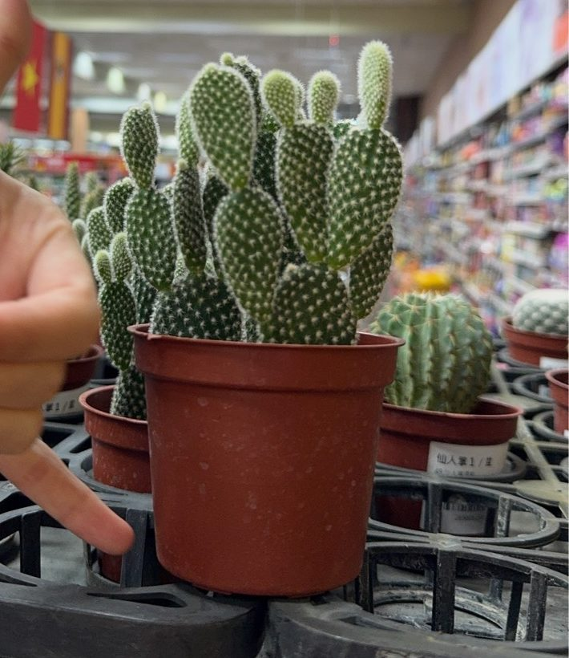
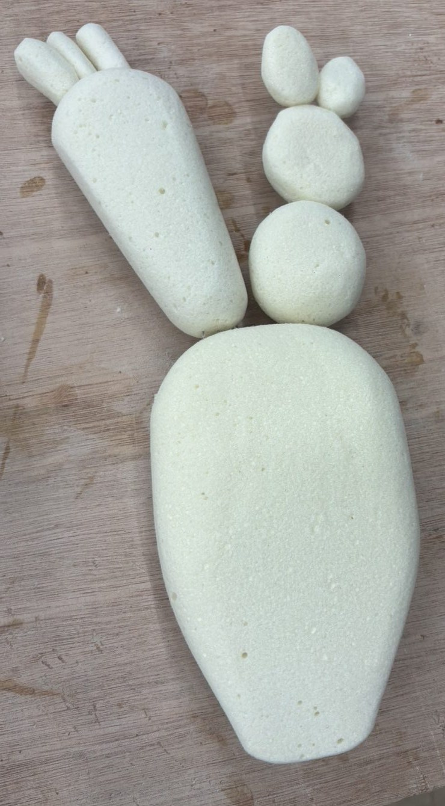

從花市裡的兔耳仙人掌出發，觀察它一片疊一片、由大到小長出去的形態。每一片莖節都用 PU 發泡材，以砂紙和銼刀慢慢磨出圓潤的形狀，再用鐵絲和熱熔膠接起來，固定在一段樹枝上。
上色時用噴漆做出漸層，邊緣噴得比較深、中間比較淺，模擬真實仙人掌在光線下的厚度與立體感。
從花市裡的一盆兔耳仙人掌開始，用 PU 發泡材做出它一片疊一片的樣子。


從花市裡的兔耳仙人掌出發，觀察它一片疊一片、由大到小長出去的形態。每一片莖節都用 PU 發泡材，以砂紙和銼刀慢慢磨出圓潤的形狀，再用鐵絲和熱熔膠接起來，固定在一段樹枝上。
上色時用噴漆做出漸層，邊緣噴得比較深、中間比較淺，模擬真實仙人掌在光線下的厚度與立體感。